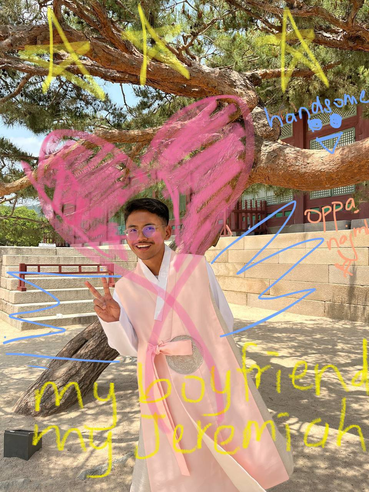
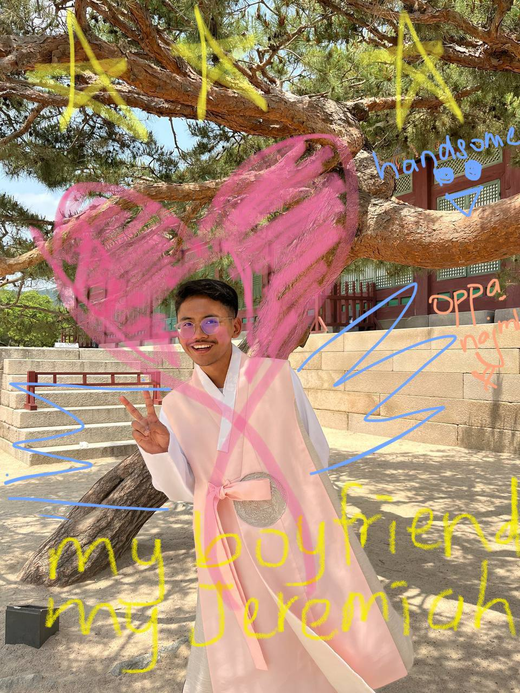
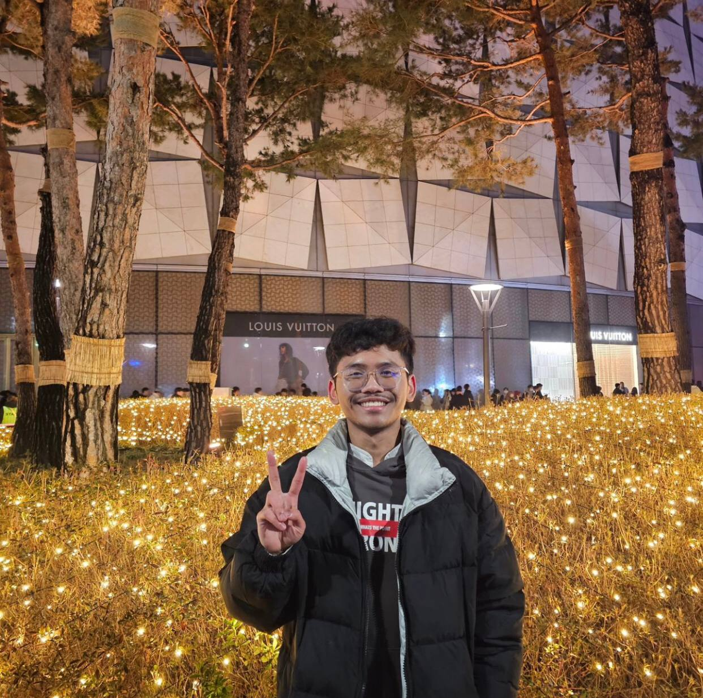
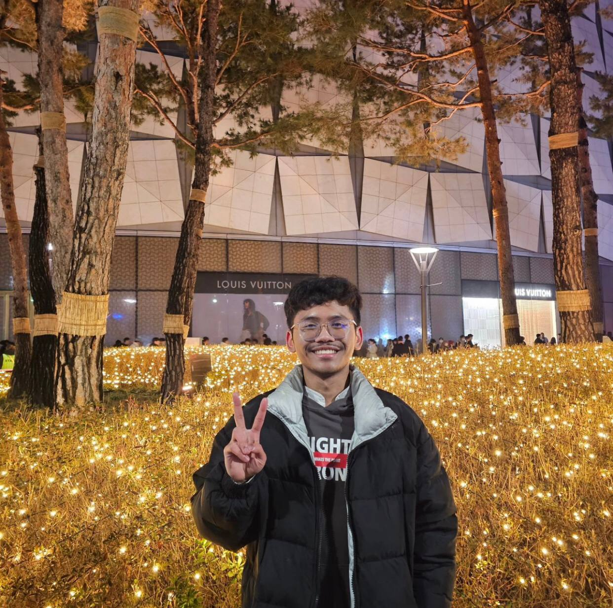
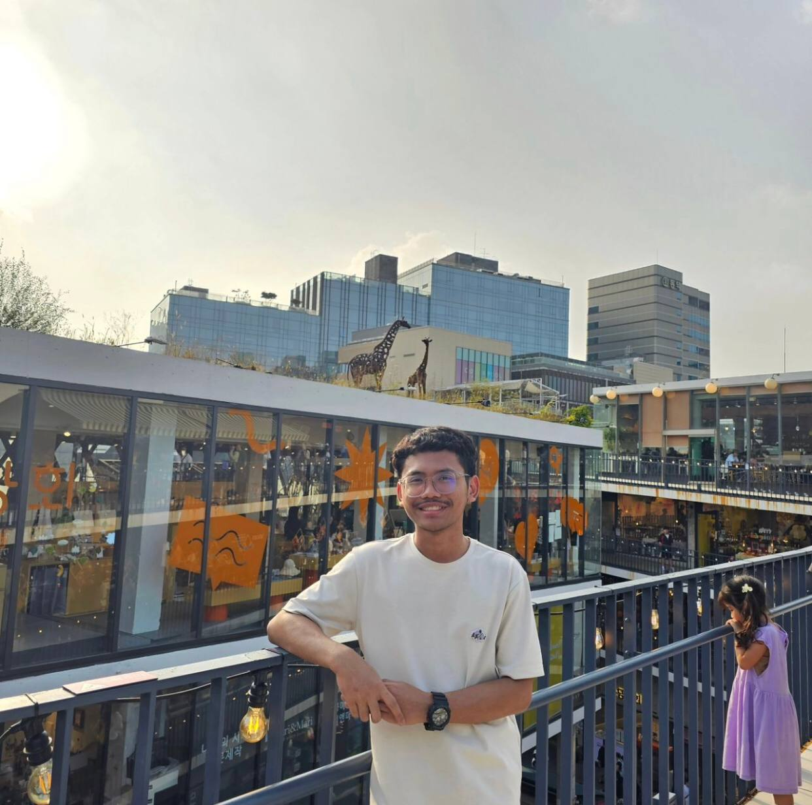
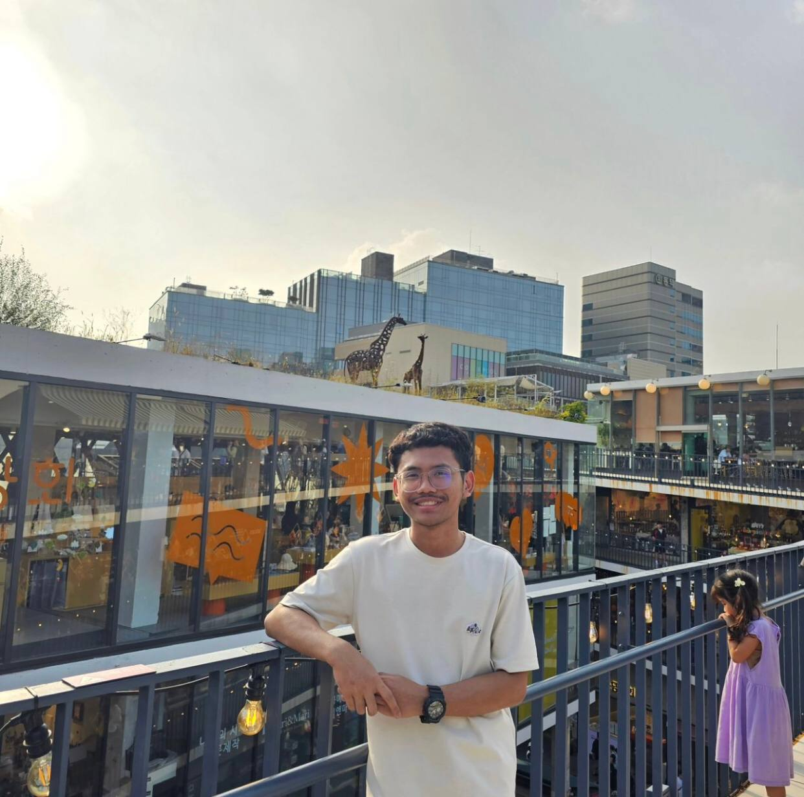
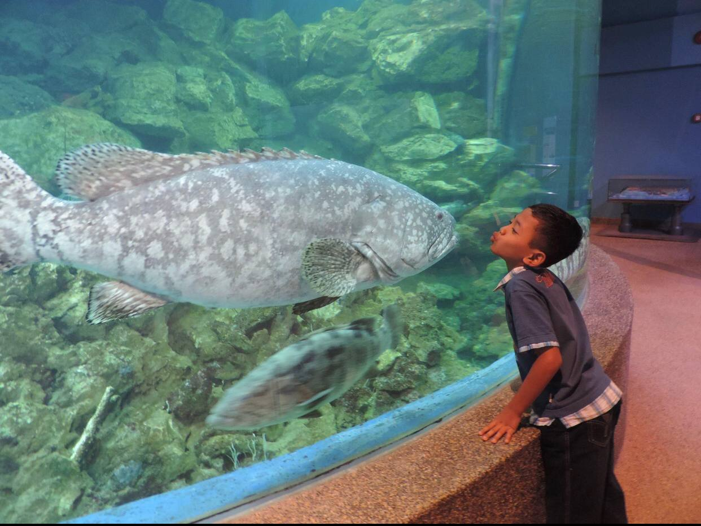
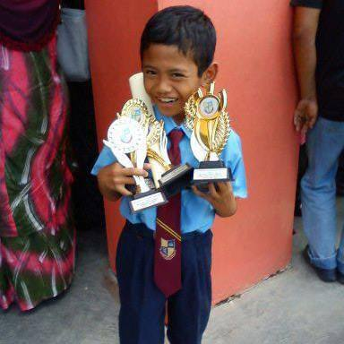
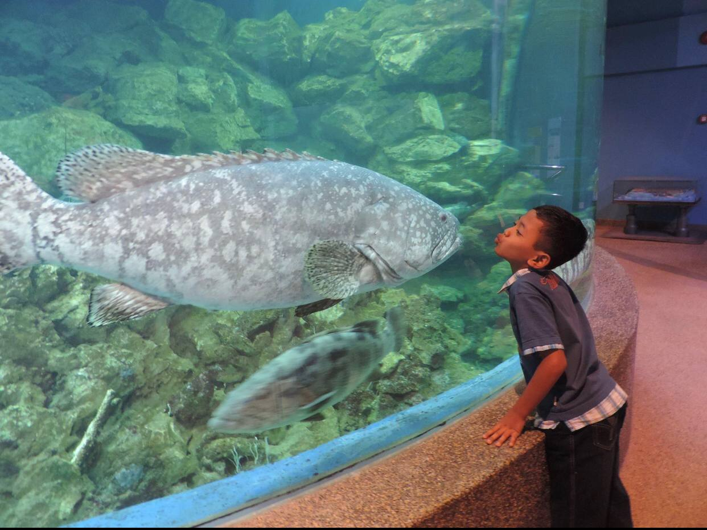
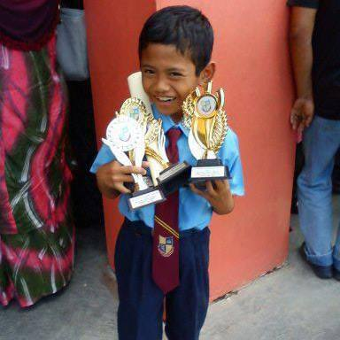

 

 

 



Happy Birthday ❤️, !
How are u there? I miss u 🥹🥹
Today, the man I love the most after my father was born !!
Excited tau tunggu birthday kau ni hehe , sebulan aku plan nak buat apa lol
Dah besar da kau mil , da 20 ! cam tak caye je kau da 20 hehe terigt masa f1 dulu , comel je kita kan I still remember I flex your name tag lol dulu HAHAHAHA pastu takpelah aku malu la nak cite ğŸ˜ğŸ˜
I wish you all the best najmiku dkt mana ii kau berada okay ! Kalau kira ii kan total nak dekat setahun lebih juga la kita tak jumpa hmm kau tak rindu aku ke😔 nak tgk najmi version 20 gitu .. May your 20s full w happiness and success mil, i am so glad to have u in my life... semoga your life in korea happy selalu . I lost my word sbb nak cakap aku rindu kau je 🥹 jaga diri cintakuuu .. enjoy ur 20s tau najmikuuu (syamil please bawa saya gi korea saya nak jumpa awak ;;;;((((( may Allah guides you to me, Amin!! Happy Birthday Syamil Najmi ❤️